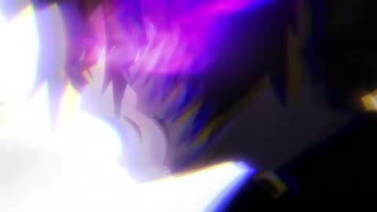

← 案例图谱H26 / 主要视觉研究样本
【全程高燃/综漫/燃向】见过黑暗的人 才明白什么是光明
在下蕾姆有何贵干 · 1760.1万播放快照 · ≥10万 · B站原作 ↗
多番角色战斗按动作和冷暖交替连接，收尾转明亮近景形成段落收束。

约168.400秒 · 案例代表帧从画面里找依据
这一例先看什么
多番角色战斗按动作和冷暖交替连接，收尾转明亮近景形成段落收束。
审美判断
暗段人脸与强色能量保持主次，小白字幕在部分高亮底上对比有限；不把亮光密度视作质量分。
迁移到自己的题材
战斗、运动、竞速、预告、产品性能演示、情绪冲突的高潮。
教学提问：观众能指出谁在攻击、朝哪边、是否击中吗？哪些是原素材的动作，哪些才是新增剪接或合成？
带画面的分析单元
图像标出取样时间，对应观察中的关键状态。单帧不能独立证明运动，连续性请结合摘录。表达作用与应用场景是教学解读，复现路线是建议，不是原作者工程还原。
分析单元 01 / 0—6.5秒
立体方盒片头／粒子／虚焦／人物字幕
实际观察
片头盒形图案居中，周围蓝色粒子；后为红瞳人物特写和小号白字幕。
表达作用（教学解读）
用运动方向、尺度和密度建立空气、空间或情绪；装饰层应服务焦点。
具体应用场景
回忆、季节、梦幻、寒冷、散场、能量爆发、文本聚散。
复现建议（非原作者工程还原）
盒体透视或3D，粒子运动模糊、镜头景深；字幕居底。
直出判断：简化盒体/粒子/字幕容易；片头设计来源待核
常见误用：平均铺满；近远粒子大小与模糊无差别；粒子挡脸；用程序火星冒充纪实拍摄。
分析单元 02 / 6.5—34秒
多番战斗选镜／冷暖反差／小字幕
实际观察
冲刺、抬脚、结印、人物对话等素材连接，场景由冷蓝转灰紫和金黄。
表达作用（教学解读）
让一次画面替换有理由：继续动作、转换观点、给反应，或通过相似形状建立联系。
具体应用场景
动作、对话、运动、情绪混剪、多来源的视觉联系。
复现建议（非原作者工程还原）
选取动作起止点、裁切与基本调色；原动画动作保留。
直出判断：已有片段的连接/调色容易；人物战斗不是简单代码后期
常见误用：只匹配颜色不顾动作阶段；方向突变；每次连接都加过渡掩盖问题。
分析单元 03 / 34—66秒
激光弧线／飞散火花／红光白闪
实际观察
红色武器光弧、紫蓝剑光碰撞、红色爆发和双人战斗。
表达作用（教学解读）
让能量、方向或主次可见；清楚的字芯和主体轮廓应保留。
具体应用场景
战斗、魔法、科技、梦境、舞台、标题强调、人物焦点。
复现建议（非原作者工程还原）
简化效果可用发光曲线、粒子、曝光闪；须跟踪武器端点与人物遮挡。
直出判断：简化光线/闪光容易；精准战斗交互及原作粒子不能直接归UP
常见误用：只加大模糊半径；光源不影响周围环境；发光覆盖所有细节；把原片光效当新增。
分析单元 04 / 66—104秒
位移拖影／冲击帧／多风格选段
实际观察
橙火爆破、灰色奔跑、红色近景、漫画式拟声字场景接蓝衣双人及街道。
表达作用（教学解读）
短暂中断视觉连续性，强调接触、转折或心理断裂；其价值来自前后的对比。
具体应用场景
打击点、快速连接、记忆跳跃、段落转折；需要根据内容选择强度。
复现建议（非原作者工程还原）
源片段选择，运动方向匹配，必要时添加缩放/模糊；原漫画拟声字需对照源作。
直出判断：缩放/模糊/选镜容易；绘制与物理破坏需原素材
常见误用：把闪烁当节奏本身；没有稳定画面作参照；为掩盖动作不清持续加闪。
分析单元 05 / 104—140秒
暖焰到蓝色剑战／连续动作
实际观察
暖色人物、蓝色剑客，多次剑击形成蓝红光带，后转人物台词和夕色火焰。
表达作用（教学解读）
让能量、方向或主次可见；清楚的字芯和主体轮廓应保留。
具体应用场景
战斗、魔法、科技、梦境、舞台、标题强调、人物焦点。
复现建议（非原作者工程还原）
动作素材选段与色彩对比，光带简化用曲线和glow，保留镜内运动。
直出判断：光带简化容易；复杂招式原画和运镜需源视频
常见误用：只加大模糊半径；光源不影响周围环境；发光覆盖所有细节；把原片光效当新增。
分析单元 06 / 140—171秒
紫色能量／RGB错位／暗闪／月前剪影
实际观察
紫光人物、横向色偏模糊、能量柱，167.5后面部紫焰；168.4后边缘色散与明暗闪，再转女角色和月前全身。
表达作用（教学解读）
把短暂破坏作为失控、断裂、冲突或数字材质的提示。
具体应用场景
赛博题材、记忆中断、身份不稳、高潮强调；也可短时掩护连接。
复现建议（非原作者工程还原）
通道分离偏移、周期曝光/黑帧、微缩放；紫焰需噪声位移加遮罩或素材。
直出判断：RGB/暗闪/微缩放容易；附着面部的精确火焰需要跟踪遮挡
常见误用：全程持续导致麻木；色散让脸和字长期看不清；把所有亮度变化算成切镜。
分析单元 07 / 171—197.376秒
亮色爆发／剑阵／温柔近景收束
实际观察
亮色爆破、剑阵与蓝白能量，末尾转粉色花瓣和眼镜女孩明亮近景。
表达作用（教学解读）
用运动方向、尺度和密度建立空气、空间或情绪；装饰层应服务焦点。
具体应用场景
回忆、季节、梦幻、寒冷、散场、能量爆发、文本聚散。
复现建议（非原作者工程还原）
选镜、亮度和色彩过渡、淡出；花瓣与角色动作可能源动画。
直出判断：调色/淡出容易；不将源动画能量和花瓣全归后期新增
常见误用：平均铺满；近远粒子大小与模糊无差别；粒子挡脸；用程序火星冒充纪实拍摄。
用连续画面核对
保留原研究的多段局部摘录。片段含音轨不代表已听审；本资料不评价音乐卡点或对白节奏。
短时变化怎样理解
38.7–40.7秒两次，126.6–128.6秒一次，167–171秒三次；同一挥剑、火花、RGB暗闪不累计。
把镜头连接、版式更新、局部图层变化和镜内运动分开记录。所查窗口是下限，不是全片平均或AI／人工排名。
原始逐窗记录 →这次练习的约束
用三个动作片段组成8秒“准备—碰撞—结果”，先不用特效；再仅加一次光效和一次短停顿，检验是否更清楚。
先写“我希望观众明白／感到什么”，再选本页的一种手法。完成无效果基础版后再加层；解释新增层带来的收益和代价。
打开练习与复盘表 →来源、观看范围与制作归属
实际检查范围：实际查看40张5秒概览0–195；38.7–40.633与126.6–128.533共60密集帧，实际约15/s；167–170.9另40帧，实际10/s（请求12/s）。源197.375833秒1920×1080/30fps；页面播放器总时长198秒，区别保留。三段4秒摘录。未听审，未连续完整音画观看。
制作线索：在下蕾姆有何贵干，第一方1760.1万，2019-03-09；全站最高第16为历史页面标记。作者说明从粉丝提供的动漫中寻找战斗素材再制作，支持人工选材剪辑；不据此确定软件或全部效果归属。
边界：主要研究价值为素材选择连接。源动画光束、火焰、拟声字与后期增量区分，不能按原作视觉复杂度评价UP特效能力。
播放快照保存时间（UTC）：2026-10-20T22:58:55.951928+00:00。H30制作方式为推定；同源改编、仿作和转载依原记录标注。
原始案例记录 · 选样表把你的判断留下来
笔记仅尝试保存在本机浏览器；浏览器策略可能限制本地文件存储，重要内容请导出。
沿着同一问题继续阅读
 AI48
AI48细节、反应与转折
武侠幻想与真实宠物的反差，依赖落点和回收。水墨、打斗和日常拖鞋的材质变化，应服务反转而不是各自炫技。
主要样本7个分析单元
 AI47
AI47细节、反应与转折
星空漂浮、舞厅、卡通群岛、玩偶舞台形成不同媒介段落；服装与双人关系作为锚点，场景丰富度不能仅归功剪辑转场。
主要样本7个分析单元
 AI42
AI42方向、冲击与节奏
城市翻转和白色斩击可在同镜内产生巨大变化。把空间运动、特效覆盖与真正换镜分开，是判断节奏的基础。
主要样本8个分析单元